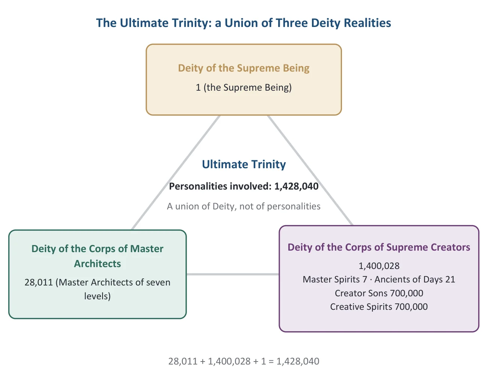
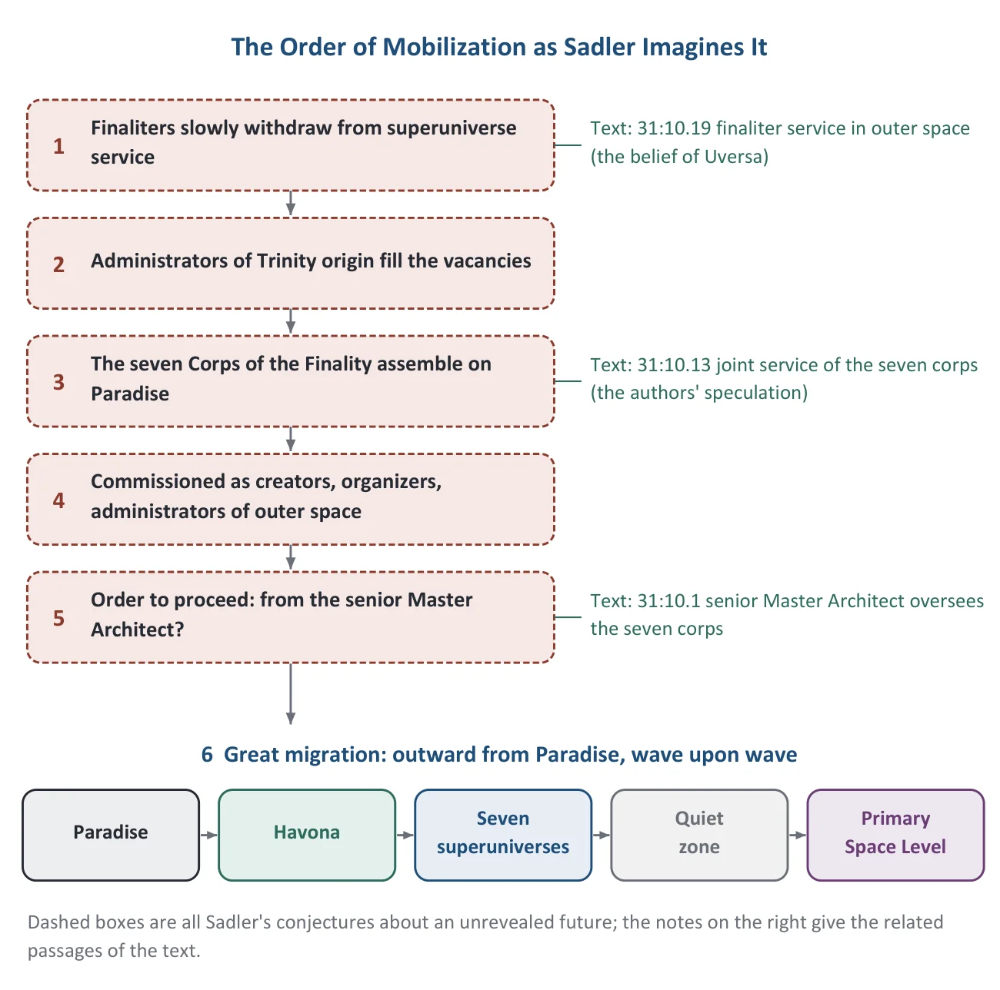

Original: La Historia Absonita, capítulo VI, «La segunda tesis creadora» (pp. 66–74)
La emergencia del Ser Supremo trae al nivel absonito al menos cuatro factores nuevos: la primera Trinidad experiencial, el Ser Supremo que actúa tanto dentro de ella como fuera de ella, el Cuerpo de los Creadores Supremos y las criaturas posfinitas que tomaron parte en el crecimiento del Supremo. En el centro está la Trinidad Última. Intervienen en ella más de 1,4 millones de personalidades, y sin embargo es una unión de tres realidades de Deidad, una Trinidad experiencial que crece y aprende. Sadler presenta a esta Trinidad partiendo del gran universo como base hacia el espacio exterior, en una escena de movilización y gran migración.
Sadler dice que la Historia Absonita comienza verdaderamente en este capítulo, y transmite su extensión mediante una comparación. Si contar toda la Historia Finita llevara aproximadamente una hora, contar toda la Historia Absonita llevaría más de diez mil años. La cifra pretende transmitir la diferencia de escala más que servir de cálculo exacto; su fundamento se examina por separado en un apéndice.
La Historia Finita concluyó con los siete superuniversos llevados a la perfección y el Ser Supremo emergiendo como su soberano experiencial. Una vez que Dios el Supremo sube al escenario de la acción universal, se producen varios cambios en el nivel absonito de la existencia. Sadler identifica al menos cuatro factores nuevos.
El primer factor es la primera Trinidad experiencial, la Trinidad Última, de la que el Ser Supremo es miembro junto con el Cuerpo de los Creadores Supremos y los Arquitectos Maestros. El segundo factor es el propio Ser Supremo. Mientras funciona como miembro Deidad de esta Trinidad, el Supremo actúa también personalmente en el universo maestro. Sadler ve en ello Su actividad como «supertodopoderoso» y la expresión de potenciales de la mente nuevos y aún desconocidos.
El tercer factor, el Cuerpo de los Creadores Supremos, requiere una doble mirada. Tomado como una Deidad unificada, el Cuerpo pertenece a la Trinidad Última. Sin embargo, cada Creador Supremo individual actúa también en persona a lo largo del universo maestro post-Supremo. Sus miembros (los Hijos Creadores y sus compañeras, los Espíritus Creativos, los Ancianos de los Días y los Siete Espíritus Rectores) fueron los dirigentes creadores de las personalidades del Paraíso-Havona que, en el alba de la segunda edad, partieron hacia la «Aventura Suprema» en los superuniversos imperfectos. Han concluido esa aventura y, al evolucionar junto con sus dominios, han cambiado su propio estado y su naturaleza.
Sadler lo ilustra con una comparación entre un Hijo Creador y un Hijo Mayor. Ambos pertenecen a la misma orden. Un Hijo Creador encarna la esencia de la divinidad del Paraíso, mientras que un Hijo Mayor ha añadido a su naturaleza la experiencia de organizar un universo local y de ganar la soberanía mediante siete autootorgamientos a semejanza de sus propias criaturas. Micael de Nebadon es un Hijo así. Su naturaleza compuesta ha absorbido las naturalezas de Melquisedek, Lanonandek, Adán y los serafines, junto con tres niveles de naturaleza humana: espiritual, morontial y material. El libro de Urantia enumera las huellas de estos autootorgamientos como sigue.
… el hogar mortal de Cristo Micael, soberano de todo Nebadon, un ministro Melquisedek para los reinos, un salvador de sistema, un liberador adánico, un semejante seráfico, un asociado de los espíritus ascendentes, un progresor morontial, un Hijo del Hombre a semejanza de la carne mortal …119:8.8
El texto dice a continuación que esta experiencia vincula a Micael con la Trinidad Última.
Micael, un Hijo Creador, es un creador espacio-temporal, pero Micael, un Hijo Mayor séptuple, es un miembro de uno de los cuerpos divinos que constituyen la Trinidad Última.119:8.6
Habrá setecientos mil seres como Micael. Sadler va más allá y conjetura que los Hijos Creadores y Espíritus Creativos más jóvenes que no recibieron un universo local en la segunda edad podrían ayudar a sus mayores en el espacio exterior y formar un «Segundo Cuerpo de Creadores Supremos». Esta conjetura no está en el texto. Por otra parte, el texto sí mira directamente hacia la capacidad de estos creadores para funcionar más allá de lo finito.
… el enlace entre un Hijo Mayor séptuple y un Espíritu Creativo de séptima etapa pueda alcanzar los niveles absonitos de servicio …21:6.3
El cuarto factor lo constituyen las personalidades perfectas y perfeccionadas que tomaron parte en el crecimiento del Supremo. Unidas al Supremo, van más allá de sus límites anteriores y se embarcan en una nueva aventura, buscando, en un nuevo nivel de realidad última, la meta hacia la que se mueve la existencia de las criaturas. Entre ellas están los finalistas mortales, sus compañeros de los seis cuerpos de finalistas de origen no mortal y numerosos asociados que no son finalistas. Mientras sirvan en los universos del espacio exterior, emprenderán también la búsqueda absonita de Dios como el Último.
Estos cuatro factores llevarán a los universos exteriores la «experiencia finita» destilada en el perfeccionamiento de los siete superuniversos, y así influirán profundamente en su desarrollo.
Sadler empareja dos acontecimientos: la emergencia del Ser Supremo personaliza, como Deidad, la primera gran síntesis, mientras que la primera Trinidad experiencial, al tomar forma efectiva, da expresión de Deidad a la segunda gran tesis. Los miembros de esta Trinidad son tres: la Deidad del Cuerpo de los Arquitectos Maestros, la Deidad del Cuerpo de los Creadores Supremos y la Deidad del Ser Supremo. El Prólogo de El libro de Urantia expone la misma composición.
1. La Trinidad Última, presentemente en evolución, finalmente consistirá en el Ser Supremo, las Personalidades Supremas Creadoras y los Arquitectos absonitos del Universo Maestro, los planificadores del universo singulares que no son creadores ni criaturas.0:12.6
Cuando solo intervienen tres, como en el caso del Padre, el Hijo y el Espíritu, es fácil pensar en una Trinidad como algo parecido a una asociación laxa. En la Trinidad Última, señala Sadler, intervienen tantas personalidades que tal concepción se vuelve imposible. Contando a los Espíritus Creativos emparejados con los Hijos Creadores, las personalidades vinculadas a esta Trinidad no son menos de 1.428.040.

¿Cómo se llega a esa cifra? Sadler no ofrece aquí un desglose, pero los números del texto la explican exactamente. Los Arquitectos Maestros suman 28.011 [31:9.10]. Del lado de los Creadores Supremos hay siete Espíritus Rectores, veintiún Ancianos de los Días, 700.000 Hijos Creadores y 700.000 Espíritus Creativos, lo que da 1.400.028. Añadiendo el único Ser Supremo se obtiene exactamente 1.428.040.
El sentido de la cifra es claro. Una Trinidad es una realidad efectiva que existe con total independencia de los seres personales asociados a ella. Cada una de las 1,4 millones de personalidades puede entrar en relación personal con la realidad efectiva de la Trinidad Última, pero la Trinidad es una unión que forman no como personas, sino como Deidad. Un coro ofrece una comparación: la música sale de la voz de cada cantante, pero el coro es una sola realidad que no pertenece a ningún cantante en particular.
La Deidad del Cuerpo de los Arquitectos Maestros. Estos planificadores del universo ya existían en la primera edad, y quizá también en la Edad Cero. Son seres absonitos que personalizan el plan de Dios para la creación maestra; según la expresión de Sadler, son «planos vivientes». Han planificado todo el universo maestro, desde Havona hasta el cuarto nivel del espacio exterior, y han coordinado la creación maestra hasta que la Trinidad Última se vuelve efectiva. Su pertenencia a esta Trinidad no es individual, sino la de la Deidad unificada de todo el Cuerpo.
La Deidad del Cuerpo de los Creadores Supremos. Aquí Sadler traza una analogía notable. Lo que la evolución completada del Supremo Todopoderoso significa para el Cuerpo de los Creadores Supremos, sugiere, es paralelo a lo que la aparición del Espíritu Infinito significó para la asociación Padre-Hijo. El poder del Todopoderoso surge del éxito de los Creadores Supremos, y Sadler razona que este mismo éxito une toda su divinidad experiencial en una sola realidad de Deidad. Ninguna de estas más de un millón de personalidades puede ser miembro por sí sola, pero la Deidad unificada del Cuerpo sí puede. Esa realidad de Deidad combinaría la perfección original de la divinidad del Paraíso con cualidades adquiridas al vivir, esforzarse y vencer en el tiempo y el espacio.
La Deidad del Ser Supremo. Habiendo completado Su evolución, esta Deidad lleva en Sí toda la experiencia finita y todo el poder experiencial que se ganó, porque estas cualidades evolutivas se han hecho una con la persona espiritual otorgada por la Trinidad del Paraíso en el nivel finito como Dios el Supremo.
De este modo, la primera Trinidad experiencial contiene toda la dotación original de la divinidad del Paraíso, enriquecida por su paso a través de la «Aventura Suprema». He aquí, pues, la segunda tesis: un desafío que, en el alba de la tercera edad, avanza hasta la frontera de una nueva creación y abre la «Aventura Última».
La Trinidad Última es algo verdaderamente nuevo en el universo, porque es una Trinidad experiencial; la Trinidad original del Paraíso es existencial. El libro de Urantia usa para ella dos formas del nombre en el original (Ultimate Trinity y Trinity Ultimate), y el Prólogo la describe como aún no plenamente manifestada, todavía en curso de realización.
Las dos Trinidades post-Havona, la Trinidad Ultima y la Trinidad Absoluta experienciales, no se hallan por ahora plenamente manifiestas; están en proceso de realización en el universo.0:12.5
| Trinidad del Paraíso | Trinidad Última | |
|---|---|---|
| Carácter | Existencial | Experiencial |
| Crecimiento | No crece | Crece |
| Aprendizaje | No tiene nada que aprender | Debe aprender |
| Unidad | Unidad de Deidad ya completa | Formada al final de la segunda edad; unidad ganada con esfuerzo en las edades del espacio exterior |
| Base | El sistema Paraíso-Havona | El gran universo completado |
La Trinidad Última puede tomar forma como realidad efectiva cuando termine la segunda edad, pero su estado unificado debe ganarse mediante el esfuerzo y el logro experienciales a lo largo de las edades post-Supremas en los cuatro niveles del espacio exterior. Su meta es llevar todo el universo maestro a su pleno desarrollo. Lograrlo es el desarrollo de la Trinidad misma, la culminación de su unidad, y de ella emerge Dios el Último, la segunda Deidad experiencial. Así como el Supremo aparece una vez que el gran universo alcanza la madurez, el Último aparece una vez que la alcanza el universo maestro.
En el futuro eterno esta Trinidad experiencial, mediante un aumento de la unidad, activará ulteriormente la presencia eventuante de la Deidad Última.106:4.1
Sadler afirma que el Último, como el Supremo, ha estado presente desde hace mucho en Havona. El texto dice que Havona es un cuadro acabado de la perfección futura del Supremo y que «sugiere el potencial del Último» [14:6.25]. La afirmación de Sadler es una interpretación que lleva este indicio un paso más allá.
Por primera vez en la historia del universo, la Trinidad del Paraíso y la Trinidad Última obrarán juntas en favor del universo maestro en el nivel absonito. La Trinidad del Paraíso ha funcionado existencialmente en ese nivel desde la eternidad. Sadler espera que la Trinidad del Paraíso se retire en la medida en que la Trinidad Última llegue a ser capaz de funcionar experiencialmente. La imagen se asemeja a la de unos padres que van traspasando tareas a un hijo que crece, pero no es algo que diga el texto.
El libro de Urantia presenta con bastante claridad la idea de que Dios el Séptuple ampliará Su función en las edades post-Supremas sirviendo a las creaciones del espacio exterior.
La función de Dios el Séptuplo data de la organización de los siete superuniversos, y probablemente se ampliará en relación con la evolución futura de las creaciones del espacio exterior.0:8.12
Cómo se relacionará Dios el Séptuple con la Trinidad Última es, sin embargo, materia de especulación. Como las dos Trinidades cooperarán en los universos exteriores, Sadler considera probable que Dios el Séptuple mantenga una relación de cooperación con cada una de ellas. De una sola cosa está seguro: ese nuevo dominio verá una intensa actividad de los Espíritus Rectores y de los Hijos Creadores.
Sadler observa que la Deidad parece actuar siempre desde una base de poder, un fundamento desde el cual pueden extenderse la divinidad y la soberanía. Una Trinidad es también Deidad, y por tanto no es una excepción a esta regla general. La Trinidad existencial obra desde la base del sistema Paraíso-Havona, y Havona se convierte en el universo nuclear desde el cual esa actividad se amplía hacia fuera. El libro de Urantia llama igualmente a Havona y al Paraíso el «núcleo de poder» de toda expansión posterior.
El Dios de los universos considera favorablemente a Havona y al Paraíso, como el eterno núcleo de poder para toda expansión universal subsecuente en el tiempo y en el espacio.14:6.10
La primera Trinidad experiencial obrará desde una base comparable, el gran universo en su papel de segundo universo nuclear, con un estado existencial-experiencial.
A la invitación y el mandato del Padre, «Sed perfectos», los superuniversos completan hacia la tercera edad su primera respuesta, la respuesta finita. Habiendo alcanzado la perfección (relativa) del establecimiento en luz y vida, se convierten, junto con Havona, en un núcleo unificado en el nivel finito: el gran universo.
¿En qué se diferencia el gran universo como síntesis completada del gran universo como nueva tesis? Sadler nos pide recordar la Havona de la primera edad y la Havona de la segunda. La Havona anterior estaba aislada y era autosuficiente; la Havona posterior era un núcleo cuyos ciudadanos se extendían hacia los superuniversos citoplásmicos. Del mismo modo, el gran universo, al cerrarse la segunda edad, disfruta de la satisfacción de un destino logrado, y al abrirse la tercera edad se moviliza para afrontar la «Aventura Última». Sadler lo resume como un paso del estado estático del «destino alcanzado» al estado dinámico del «destino perseguido».
Habiéndose convertido en núcleo, el gran universo experimentará un nuevo tipo de crecimiento a través de su relación con los universos exteriores. En la primera edad Havona estaba sujeta al estancamiento existencial de una perfección sin tacha, pero durante la segunda edad los peregrinos del tiempo rompieron ese límite al traer consigo el crecimiento experiencial. Sadler espera que Havona rompa por segunda vez un límite a su crecimiento cuando los primeros seres del espacio exterior lleguen al universo central. También los superuniversos, cuyo crecimiento llega a reposar en luz y vida, entrarán con la llegada de esos seres en un nuevo crecimiento que va más allá de lo finito. Es especulación acerca de un futuro no revelado, pero especulación modelada sobre lo que realmente sucedió en Havona.
Los superuniversos muestran con mayor claridad en qué se diferencia una creación nuclear de un universo citoplásmico, porque pasan por ambas condiciones. En la segunda edad, como citoplasma respecto de Havona, fueron el dominio de la actividad creadora más intensa. ¿Qué podría compararse, en el Paraíso o entre los mil millones de mundos de Havona, con la creatividad que brotó de setecientos mil universos locales? Por no hablar de la actividad reproductora que debió de florecer entre los midsonitas y los Hijos Materiales a lo largo de siete mil millones de sistemas locales, y entre las razas mortales en siete billones de mundos habitados.
Sin embargo, a medida que los superuniversos pasan de ser citoplasma a participar en el nuevo núcleo, la creatividad, y quizá también la actividad reproductora, debe disminuir. Avanzan gradualmente hacia un estado más asentado y estable, que en cierta medida se asemeja a la estabilidad del universo central.
Esta transición se manifiesta con mayor claridad en los universos locales. Si, como cree Sadler, los Hijos Creadores y los Espíritus Creativos parten hacia el espacio exterior, los universos locales se convertirán en unidades administrativas estables, como los sectores de un superuniverso. La actividad creadora no cesará, pero se reducirá mucho.
| Universo nuclear | Universo citoplásmico | |
|---|---|---|
| Condición | Estabilidad (relativa) | Inestabilidad (relativa) que acompaña al rápido crecimiento y cambio |
| Madurez cósmica | Maduro | Aún no maduro |
| Actividad creadora | Reducida y asentada | En su apogeo |
| Función | Base de poder; envía personal pionero | Frontera de la nueva creación; recibe personal pionero |
| Ejemplos | Havona en la segunda edad; el gran universo en la tercera edad | Los superuniversos en la segunda edad; el espacio exterior desde la tercera edad en adelante |
El núcleo es maduro; el citoplasma todavía no lo es. Un universo nuclear es el fundamento de la expansión hacia fuera, y desde él los creadores dirigentes, sus coordinados y sus subordinados parten hacia las fronteras de una nueva creación. Es como un árbol adulto que ya no crece en altura, pero esparce sus semillas a lo largo y a lo ancho para hacer surgir un nuevo bosque.
Cuando comenzó el tiempo, la expectación debió de llenar todo el sistema Paraíso-Havona en vísperas de la «Aventura Suprema». Sadler nos recuerda que quienes descendieron eran todos personalidades. Desde los Ancianos de los Días hasta los supernafines que se ofrecieron como voluntarios, poseen imaginación, son algo impredecibles en sus elecciones e incluso son capaces de elegir el mal. El texto lo deja claro incluso para seres de rango superior al de un Hijo Creador.
Pero podrían hacerlo si así lo eligiesen. La virtud es volitiva en la personalidad. La rectitud no es automática en las criaturas de libre albedrío.21:3.14
Su obra fue, por tanto, una verdadera aventura, puesta a prueba frente a lo desconocido.
Una experiencia semejante aguarda al gran universo en el futuro lejano. Tan pronto como la primera Trinidad experiencial empiece a reunir los poderes y las personalidades del segundo universo nuclear, el «tiempo de quietud» entre las edades del universo se acercará a su fin. Sadler admite que solo puede especular, pero sostiene que el texto proporciona motivos para una conjetura razonable. De hecho, los autores del texto no ocultan su creencia de que el Cuerpo de la Finalidad servirá en el espacio exterior.
Es cada vez mayor la creencia de toda Uversa que los Cuerpos de la Finalidad presentemente en desarrollo están destinados a un servicio futuro en los universos del espacio exterior …31:10.19
Sadler la imagina así. La movilización se hace visible primero cuando los finalistas se retiran, muy gradualmente, del servicio superuniversal y se reúnen en el Paraíso. La Trinidad Última dirige al Cuerpo de los Mortales de la Finalidad junto con los otros seis cuerpos. Muchas personalidades de origen único y de origen dual dejan también sus puestos, y administradores de origen en la Trinidad ocupan los lugares que dejan vacantes.
Por fin los siete Cuerpos de la Finalidad se reúnen en el Paraíso. Desde los Hijos Creadores hasta los seres intermedios y los finalistas mortales, veteranos probados a través de dos edades del universo se congregan en un solo lugar, quizá por primera y única vez. Sadler sugiere que entonces recibirán el encargo de crear, organizar y administrar los universos del espacio exterior, y que la orden de partir podría darla el Arquitecto decano del universo maestro. Puesto que el texto afirma que el Arquitecto Maestro decano tiene la supervisión de los siete cuerpos de finalistas [31:10.1], no se trata de una imaginación infundada.
Una vez dada la orden, comienza la gran partida desde el Paraíso. Oleada tras oleada, atraviesan los circuitos de Havona y los superuniversos establecidos en luz y vida, cruzan la zona de quietud que rodea al gran universo y se adentran en la inmensidad del primer nivel del espacio exterior.

En este capítulo Sadler cita varios párrafos como apoyo. Para la naturaleza compuesta de Micael cita 119:8.8, que nombra sucesivamente a un Melquisedek, un salvador de sistema, un liberador adánico, un semejante seráfico, un progresor morontial y un Hijo del Hombre. El nombre «Lanonandek» no aparece allí, pero «salvador de sistema» se refiere al autootorgamiento a semejanza de un Hijo Lanonandek, de modo que el resumen de Sadler es coherente con él. Para la movilización cita 31:10.1, que es una sola línea que afirma que el Arquitecto Maestro decano supervisa los siete Cuerpos de la Finalidad. El fundamento textual sustancial del servicio en el espacio exterior debe buscarse más bien en 31:10.13 y 31:10.19 de la misma sección.